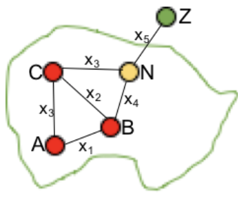
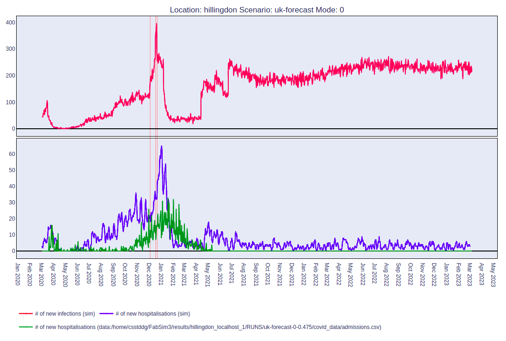

Onboarding and Orientation
Overview of Team Structure
Meet the 42Brunel Team!
Derek Groen: Reader in Simulation and Modelling at BUL and interdisciplinary researcher with primary focus on multiscale modelling and high-performance computing
Codes Contributed to:
FabSim3
Flee
FabFlee
FabDummy
FACS
FabCovid19
FabMuscle
FabParticleDA
FabMogp
Diana Suleimenova: Lecturer in Computer Science at BUL and researcher for Modelling and Simulation, Forced Displacement Prediction, Verification, Validation and Uncertainty Quantification
Codes Contributed to:
FabSim3
Flee
FabFlee
VisualFlee
EasyVVUQ
Maziar Ghorbani: Associate Lecturer in Computer Science at BUL and research in Modeling and Simulations with focus on Large-scale High-performance Distributed Computing
Codes Contributed to:
FabSim3
FACS
FabCovid19
Flee_scenario_builder
FabTSP
EasyVVUQ
Yani Xue: Lecturer in Computer Science at BUL and research in Optimisation Problems, Evolutionary Computing, Data Analytics, Modelling and Simulation
Codes Contributed to:
FabSim3
Alireza Jahani: Associate Lecturer in Computer Science Department at BUL and research in Agent-Based Modelling and Multi-Agent Systems
Codes Contributed to:
(D)Flee
Laura Marshall Harbach: Post Doctoral Researcher at BUL in Agent-Based Modelling, Multi-Agent Systems and Uncertainty Quantification
Codes Contributed to:
FabSim3
(D)Flee
Farzeen Nadeem: Junior Developer Placement Student at BUL
Introduction to Simulation Projects
Modeling and simulation involve creating physical and logical representations of real-world systems to produce data that aids in making predictions and informed decisions for NGOs or Governments. Our work takes a multidisciplinary approach, exploring ways to enhance and support modeling and simulation through research and collaborations with industry and other organisations.
FabSim3
What it is: FabSim3 is a Python-based automation toolkit that helps streamline the execution of computational workflows. It simplifies repetitive tasks and integrates various tools and simulations into a cohesive and automated process. The main paper describing it can be found here
Why it is used: FabSim3 is used to enhance the efficiency and reproducibility of research workflows. It allows users to easily configure, deploy, and run simulations on local machines or high-performance computing (HPC) clusters, making it ideal for scientific research and engineering projects requiring complex computational tasks.
Flee

What it is: FLee is an agent-based simulation framework designed to model the movement of displaced populations during crises, such as conflicts or natural disasters. The main paper describing it can be found here
Why it is used: Flee is used to simulate how individuals or groups respond to crises, helping researchers and policymakers analyse population movements and make data-driven decisions. Its ability to integrate real-world data makes it a valuable tool for addressing humanitarian challenges and improving response strategies.
How it works with FabSim3 and FabFlee: Flee integrates seamlessly with FabSim3 through its plugin, FabFlee. FabSim3 automates the execution and management of FLEE simulations across various computational environments, such as local systems or high-performance computing (HPC) clusters. The FabFlee plugin enhances Flee’s functionality by simplifying data management, automating workflows, and enabling large-scale, reproducible simulations of displaced population dynamics. This combination allows researchers to focus on refining models and analyzing results without getting bogged down by manual execution tasks.
FACS

What it is: FACS (Flu and Coronavirus Simulator) is an agent-based simulation framework designed to model the spread of infectious diseases, such as influenza and COVID-19, in specific populations or geographic areas. Up to now, we have used it to model the spread of Covid-19 in various regions of Europe:
The United Kingdom: Greater London, South-East and North-West of England
Lithuania: The region of Klaipėda
Romania: The city of Călărași
Türkiye: The cities of Ankara and Istanbul
The main paper describing it can be found here
Why it is used: FACS is used to analyse how infectious diseases spread within communities and evaluate strategies to mitigate outbreaks, such as social distancing, vaccination, and mask mandates. Its ability to model detailed population behaviors and interactions makes it an essential tool for public health planning and policymaking.
How it works with FabSim3 and FabFACS: FACS can be integrated with FabSim3 through its plugin, FabFACS, to automate the execution of large-scale disease simulations.
Getting Started with Project Documentation
Thorough and clear project documentation is essential for collaboration and knowledge sharing.
Follow these steps to contribute or review documentation effectively:
Read the Existing Documentation: Familiarize yourself with the structure and existing content.
Understand the Documentation Tools:
Ensure you have Sphinx or other relevant tools installed.
Learn the basics of Markdown, as used in the project (this doc is also written in .md).
Contribute to the Documentation:
Follow the existing style and structure.
Write concise and clear explanations.
Use proper headings, lists, and code blocks to maintain readability.
Test Your Changes:
Build the documentation locally to ensure correctness.
Fix formatting or broken links as needed.
Expectations for Students
As a student, you are expected to:
Communicate Effectively:
Try to attend all team meetings and let us know if you can’t.
Share progress regularly through updates or reports.
Ask questions when in doubt.
It is helpful to criticise team members openly
Collaborate and Learn:
Try to work in parallel on team tasks.
Distribute workload
Use feedback to improve work.
Take the initiative to learn new tools, concepts, or methods.
Follow Best Practices:
Use Git for version control.
Use GitHub Issues to raise issues.
Document your code systematically.
Adhere to the PEP8 guidelines for Python coding.
Focus on Problem-Solving:
Take ownership of your assigned tasks and responsibilities.
Identify problems which could block progress early.
Break down problems into manageable parts and seek help when needed.
Share your findings and ideas with the team for collective progress.
Communication Tools
1. Slack
Why We Use Slack:
Slack is the primary tool for team communication and collaboration.
It allows for real-time messaging, file sharing, and quick discussions across various channels.
NOTE: Messages on Slack disappear after 90 days so it should not be used for archiving purposes (e.g. storing papers or important debugging discussions).
Expectations for Using Slack:
Be Responsive: Check messages regularly and try to respond within a day.
Use Channels Effectively:
Post messages in the appropriate channels (e.g., #general, #project-updates).
Use direct messages for private or sensitive discussions.
Organize Communication:
Use threads to keep conversations organized.
Use reactions or emojis to acknowledge messages when a reply isn’t needed.
2. Google Drive
Why We Use Google Drive:
Google Drive is used for document sharing, version control, and collaborative editing.
It ensures that all team members have access to the latest versions of project documents and files.
Expectations for Using Google Drive:
Organize Files: Save documents in the correct project folders with clear and descriptive filenames.
Collaborate Effectively:
Use comments and suggestions for feedback instead of directly editing shared files.
Maintain Security: Do not share Drive links outside the team without permission.
Regular Updates: Ensure any new versions of documents are uploaded promptly to keep the team aligned.
3. Microsoft Teams
Why We Use Teams:
Microsoft Teams is used for scheduled meetings, video calls, and formal discussions.
It serves as a central hub for coordinating team activities and sharing meeting notes.
Expectations for Using Teams:
Be Prepared: Join meetings on time with any relevant materials ready.
Collaborate During Meetings:
Use the chat feature for additional input during calls.
Share screens or files to enhance discussions.
4. Email
Why We Use Email:
Email is used for formal communication, official updates, and sharing information with external stakeholders.
It is a reliable method for documenting important discussions.
Expectations for Using Email:
Professional Tone: Use clear and concise language, proper formatting, and a polite tone.
Timely Responses: Try to respond to emails within a day.
Subject Clarity: Use descriptive subject lines to make emails easy to understand and track.
Attachments and Links: Ensure any attachments or links are relevant, properly labeled, and functional.
5. GitHub
Why We Use GitHub:
GitHub is the primary platform for managing version control and hosting project code.
It allows for collaborative coding, issue tracking, and peer reviews.
Expectations for Using GitHub:
Commit Regularly: Write clear and descriptive commit messages to make the code history easy to understand.
Collaborate on Pull Requests: Request reviews for your pull requests and provide constructive feedback on others’ code.
Report and Resolve Issues: Use the issue tracker to document bugs, features, or tasks and keep them updated with progress.